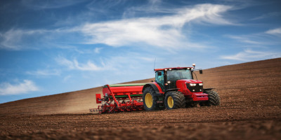
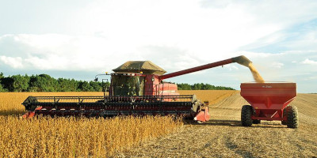
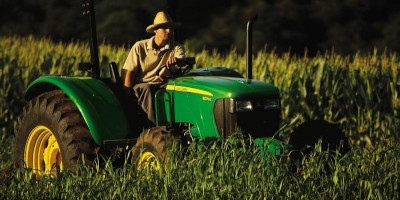
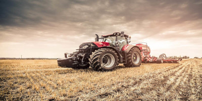
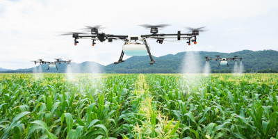

Somos a SPWN AGRO, uma plataforma que liga pessoas que necessitam de uma máquina agricola, com pessoas que
pessoas que tem um maquinário parado.
A melhor e mais completa sistema de alguel de máquinas do Brasil
Aluguel de Máquinas
Se você precisa de maquinário especializado para um projeto temporário ou apenas não quer investir em equipamentos caros que serão usados com pouca frequência, o aluguel de máquinas pode ser a solução perfeita para suas necessidades. Oferecemos uma ampla variedade de máquinas disponíveis para aluguel, incluindo equipamentos de construção, maquinário industrial, ferramentas elétricas e muito mais. Nossa frota de máquinas é atualizada regularmente para garantir que nossos clientes recebam equipamentos modernos, eficientes e seguros.
Ao alugar máquinas conosco, você pode economizar dinheiro e tempo, além de evitar os custos de manutenção e armazenamento. Nossos contratos de aluguel são flexíveis e adaptáveis às necessidades de cada cliente, permitindo que você escolha o período de locação mais adequado para o seu projeto. Nossa equipe altamente capacitada e experiente está sempre disponível para oferecer orientação e suporte técnico, ajudando a garantir que você tenha a melhor experiência possível ao alugar nossos equipamentos. Também oferecemos serviços de entrega e retirada para garantir que o equipamento esteja pronto para uso no local desejado. Não perca mais tempo e dinheiro comprando equipamentos que serão usados apenas uma vez. Entre em contato conosco para saber mais sobre nossas opções de aluguel de máquinas e comece a economizar hoje mesmo.
Mão de Obra Qualificada
Se você está buscando mão de obra agrícola confiável e experiente, você está no lugar certo! Na Agromaqq oferecemos serviços de mão de obra agrícola de alta qualidade para ajudar a maximizar a produção e eficiência da sua propriedade rural.
Nossa equipe é composta por trabalhadores experientes e treinados, que têm o conhecimento necessário para lidar com todas as tarefas agrícolas, desde o plantio até a colheita e a pós-colheita. Nós fornecemos trabalho de qualidade para todas as culturas, incluindo milho, soja, trigo, frutas, verduras e muito mais. Oferecemos serviços de mão de obra agrícola a preços competitivos, sem comprometer a qualidade ou a eficiência. Trabalhamos duro para atender às suas necessidades específicas e garantir a satisfação total do cliente. Entre em contato conosco hoje mesmo para discutir suas necessidades de mão de obra agrícola e solicitar uma cotação. Estamos ansiosos para trabalhar com você e ajudá-lo a alcançar seus objetivos de produção agrícola.
Inove Utilizando Drones
Alugue drones, para facilitar a vida no campo. Os drones têm ganho espaço na agricultura e na pecuária. Sua versatilidade vale o investimento, já que podem desempenhar diversas funções na fazenda e têm custo relativamente baixo, variado de acordo com modelo e tecnologias embarcadas.
Elencamos 15 benefícios que os drones podem trazer ao agronegócio:
- Análise da plantação;
- Demarcação de plantio;
- Acompanhar o desenvolvimento da safra;
- Pulverização;
- Acompanhamento de pastagem;
- Monitorar desmatamento;
- Achar nascentes de água;
- Descobrir onde abrir estradas;
- Vigilância;
- Achar focos de incêndio;
- Telemetria;
- Tocar uma boiada;
- Contar a boiada;
- Busca de animais perdidos;
- Facilita a venda da fazenda;